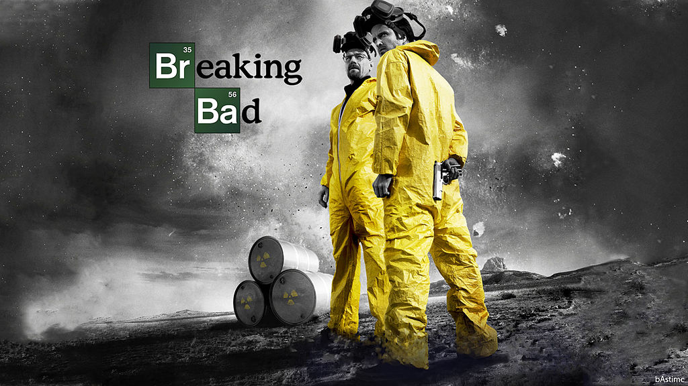

«Пуститися берега» (англ. Breaking Bad) — американський драматичний телесеріал, написаний Вінсом Ґілліганом. Продюсерами шоу стали Sony Pictures Television. Серіал транслюється у США і Канаді на кабельному телеканалі АМС. Серіал номінувався на «Еммі» і виграв по дві номінації в 2008, 2009 і 2010 роках, включаючи престижну «Найкращий актор драматичного серіалу»[1]. Перша серія першого сезону вийшла в ефір 20 січня 2008 року. Всього серіал складається з п'яти сезонів. 29 вересня 2013 року вийшов останній епізод.
Дія серіалу відбувається в Альбукерке, штат Нью-Мексико. «Пуститися берега» — це історія Волтера Вайта (Браян Кренстон), шкільного вчителя хімії, якому діагностують невиліковний рак легенів на початку серіалу. Він зривається і пускається берега, бажаючи фінансово забезпечити майбутнє своєї родини, виробляє метамфетамін, який продає його колишній учень Джессі Пінкман (Аарон Пол).
Сюжет
Шкільний вчитель хімії, Волтер Вайт (Браян Кренстон) дізнається, що є невиліковно хворим на рак легень, та вдається до торгівлі наркотиками для того, щоб забезпечити вагітну дружину та сина-інваліда. Будучи на розслідуванні разом зі своїм свояком, агентом УБН Генком (Дін Норріс), він зустрічає колишнього учня Джессі Пінкмена (Аарон Пол), який тікає з нарколабораторії. Згодом Волтер зустрічається з ним та розробляє схему виготовлення та розповсюдження метамфетаміну, щоб платити за своє лікування і забезпечувати сім'ю.
Нагороди
- Кращі серіали трилери 2008 року (1 місце)
- Кращі серіали драми 2008 року (1 місце)
- Кращі кримінальні серіали 2008 року (1 місце)
- Кращі зарубіжні серіали 2008 року (1 місце)